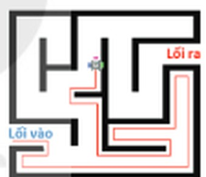
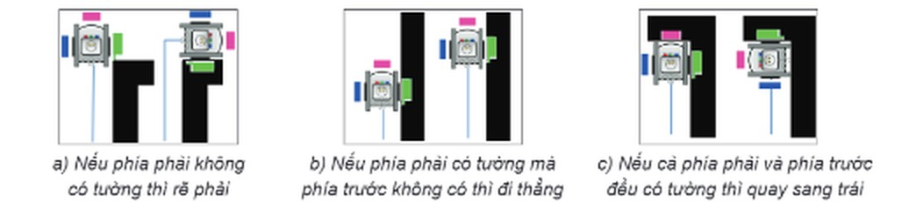
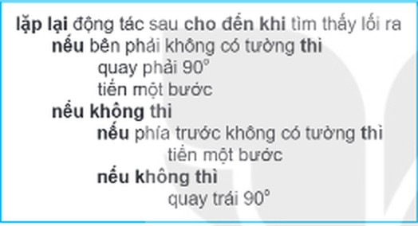
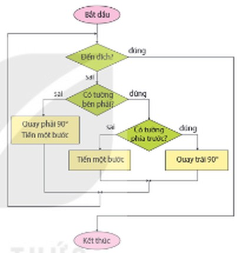

Dành cho giáo viên
Theo dõi lớp
| Học sinh / Nhóm | Đã nộp | Cập nhật |
|---|
Bước 1
1 Khởi động
Khám phá Hình ảnh khởi động
Khởi động Tìm đường thoát khỏi mê cung
Minh: Tớ đã từng vào mê cung trong một khu vui chơi. Tớ phải tìm đường thoát khỏi mê cung mà không được dùng sơ đồ.
Khoa: Thật là một trò chơi thú vị.
Minh: Bạn có biết cách tìm đường thoát khỏi mê cung không?
Khoa: Thật là một trò chơi thú vị.
Minh: Bạn có biết cách tìm đường thoát khỏi mê cung không?
Ghi bài Khởi động
Sau khi thầy cô chốt, em chép nội dung dưới đây vào vở.
Bước 2 · Hình thành kiến thức mới
2.1 Giải quyết vấn đề
Hoạt động 1 Tìm đường thoát khỏi mê cung
Mê cung được dùng để chỉ những công trình gồm nhiều hành lang, lối đi, được tạo thành từ những bức tường. Một robot xuất phát từ Lối vào, tìm đường tới Lối ra như Hình 14.1. Em hãy quan sát cách di chuyển của robot và trả lời các câu hỏi sau: 1. Robot di chuyển trong mê cung theo cách nào? 2. Tại sao cách di chuyển đó dẫn robot tới Lối ra?

Thử trên mô phỏng: em hãy tự điều khiển robot đi từ Lối vào tới Lối ra sao cho bức tường luôn ở bên phải robot. Robot chỉ biết bên trái, phía trước, bên phải có tường hay không (ô màu đen là có tường). Mô phỏng sẽ cho biết mỗi động tác của em có đúng cách đó không.
Đọc hiểu Các bước giải quyết vấn đề
Đọc mục 1 (SGK trang 76–77). Trong Hoạt động 1, robot đã di chuyển sao cho bức tường luôn ở bên phải nó. Bằng cách di chuyển như vậy, robot sẽ được bức tường dẫn qua mọi vị trí của mê cung cho đến khi tìm thấy Lối ra. Tìm Lối ra trong mê cung là một vấn đề, được giải quyết qua các bước sau:
- Tìm hiểu vấn đề là xác định những yếu tố đã cho và kết quả cần đạt. Vấn đề ở đây là tìm thấy Lối ra khỏi mê cung mà không có người để hỏi đường và cũng không có sơ đồ của mê cung để di chuyển theo. Robot phải xác định một hướng di chuyển (rẽ phải, đi thẳng hoặc rẽ trái) tại mỗi vị trí mà nó đi qua.
- Phân tích vấn đề là phân chia vấn đề thành những vấn đề nhỏ hơn, dễ giải quyết hơn. Chẳng hạn, quyết định của robot có thể được chia thành ba trường hợp: rẽ phải, đi thẳng và rẽ trái. Vì không có bản đồ và không được hỏi đường nên robot chỉ được dựa vào vị trí của bức tường để quyết định.
- Lựa chọn giải pháp là lựa chọn cách giải quyết vấn đề và trình bày giải pháp đó một cách cụ thể, rõ ràng. Để di chuyển sao cho bức tường luôn ở phía bên phải của mình, robot sẽ phải chọn hướng đi theo quy tắc ưu tiên từ phải sang trái. Ba tình huống đó được minh hoạ trong Hình 14.2: a) Nếu phía phải không có tường (nghĩa là có đường đi phía bên phải) thì rẽ phải. b) Nếu phía phải có tường mà phía trước không có (đi thẳng được) thì đi thẳng. c) Nếu cả phía phải và phía trước đều có tường thì quay sang trái để chọn lại hướng.

- Thực hiện giải pháp là bước triển khai giải pháp đã chọn. Trong Hoạt động 1, robot di chuyển theo cách đã chọn và được mô tả trong bước trước như thực hiện một thuật toán. Nếu thuật toán đúng, robot sẽ tìm thấy lối ra và thoát khỏi mê cung.
- Đánh giá kết quả là bước xem xét hiệu quả đạt được khi thực hiện giải pháp để cải tiến hoặc phát hiện những giải pháp mới. Chẳng hạn, thuật toán bám tường có thể được thực hiện với nhiều mê cung có đặc điểm khác nhau để có thể cải tiến với những tình huống đặc biệt.
Câu hỏi SGK trang 77
Em hãy mô tả các bước giải quyết vấn đề chọn trường để tiếp tục học tập sau khi tốt nghiệp THCS.
Ghi bài 1. Giải quyết vấn đề
Sau khi thầy cô chốt, em chép nội dung dưới đây vào vở.
Bước 2 · Hình thành kiến thức mới
2.2 Mô tả giải pháp dưới dạng thuật toán
Hoạt động 2 Thuật toán bám tường
Thuật toán bám tường là một trong những giải pháp thoát khỏi mê cung. Trong thuật toán, robot di chuyển sao cho bức tường luôn ở một phía của nó (chẳng hạn phía bên phải). Em hãy mô tả thuật toán xác định hướng di chuyển của robot. Biết rằng robot chỉ thực hiện được những động tác sau: 1. Phát hiện xung quanh (trái, phải, phía trước) có tường hay không. 2. Quay trái hoặc quay phải một góc 90°. 3. Tiến (đi thẳng) một bước về phía trước.
Thử trên mô phỏng: chọn hướng và động tác ở các chỗ (chọn) để hoàn thành thuật toán bám tường phải, rồi bấm ▶ Chạy hoặc Chạy từng bước để xem robot thực hiện từng dòng.
Đọc hiểu Liệt kê các bước và sơ đồ khối
Đọc mục 2 (SGK trang 78). Robot là một máy tính. Giải pháp thoát khỏi mê cung cần phải được mô tả một cách rõ ràng sao cho tại mỗi bước đi của nó, robot biết được phải đi theo hướng nào mà không bị nhầm lẫn. Trong thuật toán bám tường (bên phải), robot sẽ ưu tiên đi con đường phía tay phải, nếu không có đường nó mới lần lượt chọn lối đi thẳng hoặc quay sang trái như được mô tả trong Hình 14.2. Thuật toán bám tường có thể được mô tả theo cách liệt kê các bước (Hình 14.3a) hoặc bằng sơ đồ khối (Hình 14.3b).


Câu hỏi SGK trang 78
Em hãy mô tả giải pháp chọn trường sau khi tốt nghiệp THCS dưới dạng liệt kê các bước hoặc sơ đồ khối.
Ghi bài 2. Mô tả giải pháp dưới dạng thuật toán
Sau khi thầy cô chốt, em chép nội dung dưới đây vào vở.
Bước 3
3 Luyện tập
Luyện tập Thuật toán bám tường trái
Em hãy mô tả thuật toán bám tường bên trái để tìm đường thoát khỏi mê cung.
Trên mô phỏng: thuật toán dưới đây đang là bám tường phải. Hãy sửa thành bám tường trái rồi chạy thử trên Mê cung 1 và Mê cung 2. Sau đó, chạy cả hai thuật toán trên Mê cung 3 (robot bắt đầu ở giữa) để đánh giá kết quả.
Ghi bài Luyện tập
Sau khi thầy cô chốt, em chép nội dung dưới đây vào vở.
Bước 4
4 Vận dụng
Vận dụng Mô phỏng thuật toán bám tường bằng Scratch
Em hãy lập chương trình trong ngôn ngữ Scratch mô phỏng thuật toán bám tường.
Gợi ý: dưới đây là các khối lệnh kiểu Scratch: lặp lại cho đến khi, nếu … thì … nếu không, xoay, di chuyển. Hãy chọn đủ các chỗ trống để robot thoát khỏi mê cung. Trong Scratch thật, em có thể vẽ mê cung trên phông nền, gắn các ô màu nhỏ quanh nhân vật làm cảm biến và dùng khối màu … chạm màu …? để biết có tường hay không.
Ghi bài Vận dụng
Sau khi thầy cô chốt, em chép nội dung dưới đây vào vở.